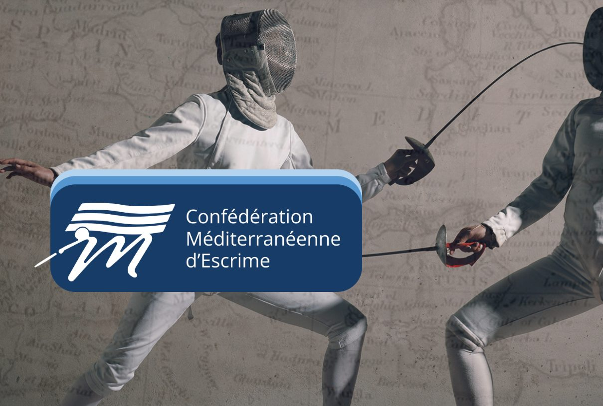

Confédération Méditerranéenne d’Escrime
Per informazioni scrivi a infomedfence@gmail.com.
Co.MEsLa nostra organizzazione
Benvenuti sul sito della CoMEs – Confédération Méditerranéenne d’Escrime – un organismo sportivo che fa capo alla F.I.E. (Fédération Internationale d’Escrime), e si è costituito nel 2003.
La Confederazione raggruppa le Federazioni Nazionali di Scherma dei paesi che si affacciano sul Mar Mediterraneo, che vi hanno aderito con lo scopo primario di promuovere e sviluppare la disciplina tutto intorno al bacino del Mediterraneo e approfondire il dialogo tra i popoli che lo abitano.
Paesi di diverse dimensioni, che affondano le loro culture, le loro tradizioni, le loro religioni in una storia plurimillenaria sviluppatasi in un continuo rapporto proprio grazie al Mare Mediterraneo, che, più che barriera geografica di divisione è stato fattore di avvicinamento, di unione, di condivisione, un incubatore di grandi civiltà che hanno segnato la storia dell’umanità. Oggi questi paesi vedono crescere sempre di più l’esigenza di vivere insieme, di rafforzare rapporti e relazioni, mettendo in comune metodi, conoscenze, competenze, capacità, criteri di organizzazione.
La Confederazione lo fa nel campo della scherma e, durante questi anni, ha saputo svolgere un’attività a seguito della quale la conoscenza comune e la collaborazione tra i paesi aderenti sono andate via via migliorando. Si è ottenuta, così, una proficua crescita tecnica ed organizzativa di tutto l’ambiente schermistico. I tre continenti che costeggiano il Mar Mediterraneo sono rappresentati tutti nella Confederazione e gli undici paesi costituenti sono diventati venti. Ma c’è da considerare che altri paesi, che non si affacciano sul Mediterraneo, ma hanno col bacino una affinità culturale e storica, quali il Portogallo, la Giordania, l’Iraq, partecipano normalmente alle attività della Confederazione.
Nel 2008 è stato aperto un sito web dedicato le cui informazioni ad oggi sono disponibili solo tramite l’archivio di internet; per mantenere viva la memoria della Confederazione, nel 2023 è stato deciso di creare un nuovo sito web e riportare in vita, nel web, le informazioni che rischiavano di essere perdute.
I nostri numeri
- 20Nazioni
- 10Membri esecutivi
- 2Competizioni annue
Comitato EsecutivoTutti i membri
- Ziad El ChoueiriPresidente
- Vincenzo De BartolomeoVice Presidente
- Raouf BernaouiVice Presidente
- Alain GarnierSegretario Generale
- Antonio Garcia HernandezTesoriere
- Martina ZmaicComponente
- Yosri BaouabComponente
- Ippokratis ManoudakisComponente
- Ayman MonieerComponente
- Muminhan BilginComponente
Federazioni nazionaliTutte le federazioni
- Albania
- Algeria
- Cipro
- Croazia
- Egitto
- Francia
- Grecia
- Giordania*
- Italia
- Libano
- Libia
- Malta
- Marocco
- Portogallo*
- Principato di Monaco
- Serbia
- Siria
- Spagna
- Turchia
- Tunisia
* Paese aderente: in quanto tale aderisce ma non è federato.
Commissioni e membri onorari
Commissione Promozione
- Georges Michon
- Zaida Doghri
- Nilsu Cok
Membri onorari
- Lioniero Del Maschio
- Giorgio Scarso